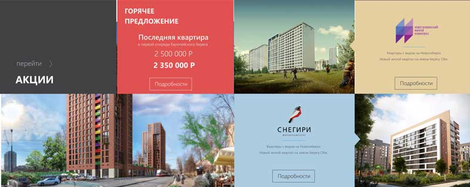
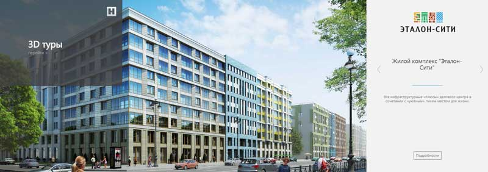
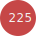
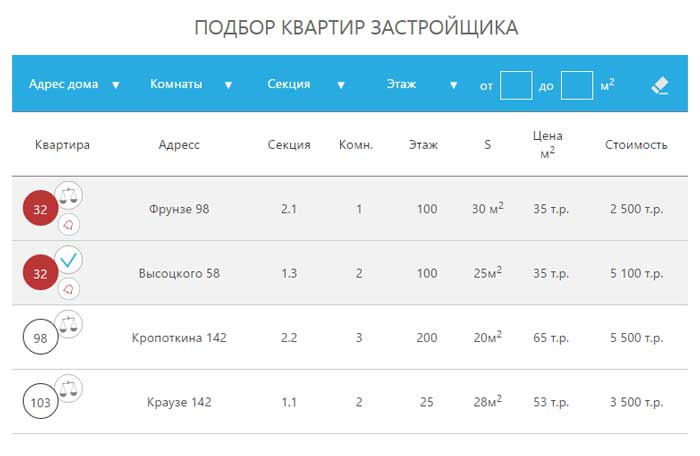
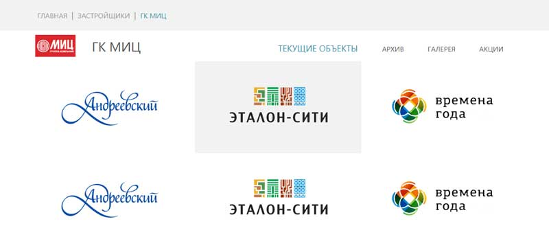

-

- Выберите город
- О проекте
- Регистрация/вход
Для начала выберите интересующий Вас город. Поиск и выдача результатов производится по выбранному городу.
На главной странице в блоке «жилые комплексы» Вы можете перейти к просмотру всех строящихся жилых комплексов в выбранном городе. Не переходя с главной страницы Вы можете просмотреть все варианты «жилых комплексов с помощью «пролистывания». Для просмотра информации о жилом комплексе и осуществления подбора квартиры нажмите «подробности»
Информационный блок с акциями и актуальными спецпредложениями от застройщиков. Чтобы перейти на страницу акции, нажмите на «подробности».
С помощью блока «застройщики» доступен просмотр информации о всех застройщиках города. Для этого нажмите «перейти», либо выберете конкретного застройщика.
Каждому посетителю сайта доступны 3D – экскурсии по новостройкам города. Панорамный вид с различных точек позволит не только отслеживать ход строительства, но и оценить все достоинства и преимущества прилегающих территорий. Вы можете просмотреть все доступные 3D туры с помощью пролистывания слайдера.
Просмотр предложений от застройщиков и подбор нужного варианта доступны каждому посетителю сайта. Для получения ID квартиры, а также осуществления бронирования нужного варианта необходима регистрация на сайте.
На странице представлены все застройщики города, при переходе на страницу застройщика доступна полная информация о компании (контакты, история, деятельность, текущие и планируемые объекты). Чтобы перейти на страницу застройщика нажмите на него.
На странице представлены все текущие акции и предложения от застройщиков в выбранном городе. Вы можете воспользоваться фильтром «выбрать по застройщику» для отображения акций от конкретного застройщика.
На странице представлены все строящиеся жилые комплексы в выбранном городе. При переходе на страницу жилого комплекса доступна полная информация о строящемся комплексе (подробнее смотри страницу жилого комплекса).
В результатах выдачи отображаются все варкианты квартир, соответствующие заданным параметрам поиска. Для удобства поиска нужного варианта на странице доступна сортировка результатов по возрастанию/убыванию по следующим параметрам: количество комнат, этаж, площадь, цена за м2, стоимость в млн.руб. Также имеется возможность отсортировать в алфавитном порядке предложения по названию застройщика и по названию жилого комплекса.
В результатах выдачи в соответствии с заданными параметрами отображаются все варианты квартир, независимо от текущего статуса:
«забронированные варианты» обозначены  и выделены серым цветом.
Вы можете установить фильтр «не отображать забронированные квартиры», тогда в результатах будут отображаться только «свободные» квартиры. Для удобства сравнения выбранных вариантов доступна страница сравнения квартир (смотри страницу сравнения квартир).
Для добавление квартиры в сравнение нажмите , значок  обозначает, что квартира добавлена в сравнение.
обозначает, что квартира добавлена в сравнение.
Зарегистрированным пользователям сайта доступна возможность отслеживать изменения статуса забронированных квартир. Для этого в строке выбранной квартиры нажмите  , и Вам придет уведомление на e-mail (указанный при регистрации) в случае изменения статуса квартиры.
, и Вам придет уведомление на e-mail (указанный при регистрации) в случае изменения статуса квартиры.
Чтобы перейти на страницу выбранной квартиры, нажмите на значок квартиры .
Вы можете перейти на страницу застройщика, нажав в строке квартиры на название застройщика, или на страницу жилого комплекса, нажав на название ж/к.
Поиск квартиры в новостройках осуществляется по множеству параметров. Заполните соответствующие поля параметров и нажмите «показать варианты». Если в поле «застройщик» Вы указали конкретного застройщика, то в поле «жилые комплексы» будут доступны к выбору только предложения от данного застройщика.
Вы можете наблюдать за расположением строящихся жилых комплексов непосредственно на карте города.
Нажмите на иконку и Вам откроется краткая информация о жилом комплексе.
Также Вы можете увеличивать масштаб карты для просмотра и оценки инфраструктуры прилегающей территории к строящемуся жилому комплексу. При уменьшении масштаба карты до масштаба «страна» Вы можете узнать о количестве предложений по городам РФ.
Для удобства поиска новостроек по карте доступны фильтры «застройщик», «жилой комплекс», «категория жилья», «район» и акции. При выборе конкретного застройщика на карте отображаются строящиеся объекты выбранного застройщика.
На странице выбранной квартиры представлена подробная планировка квартиры, расположение квартиры на этаже и расположение в доме.
В зависимости от текущего статуса квартиры имеется возможность запросить уведомление об изменении статуса  или самостоятельно забронировать квартиру
или самостоятельно забронировать квартиру  .
.
В случае, если Вы не зарегистрированы, пройдите процедуру регистрации. Заполните обязательное поле – номер телефона. Телефон необходим для связи с Вами специалиста отдела продаж застройщика. После подачи заявки на бронирование квартира автоматически бронируется в системе до подтверждения/отмены брони специалистом отдела продаж застройщика. После подачи заявки на бронирование специалист отдела продаж свяжется с Вами в течение 2-х часов.
Меню «ипотека» позволяет отправить запрос на рассмотрение условий предоставления ипотеки специалистам банков-партнеров проекта.
Выберите банк из предложенных и нажмите «перейти». Заполните специальную форму и нажмите «отправить заявку». Специалист банка свяжется с Вами в течение 3-х часов.
На странице выбранной квартиры имеется возможность добавить квартиру в сравнение  .
.
На странице квартиры доступен подбор квартиры в выбранном жилом комплексе, а также подбор похожих вариантов в городе.
В меню «получить документы» доступны для скачивания пакет документов, необходимый для оформления покупки квартиры, а также рекомендации по оформлению документов.
«Получить ID» - смотри ниже описание раздела «вознаграждение».
В личном кабинете в меню «профиль» Вы можете изменить данные, нажав на строку для ввода данных. В меню «полученные ID» отображаются загруженные ID за весь период регистрации на сайте. Меню вознаграждение – смотри подробнее описание раздела «вознаграждение».
Для перехода на страницу сравнения перейдите в личный кабинет и выберите меню «сравнение». В данной форме отображаются выбранные Вами варианты для сравнения по множеству параметров. Для удаления квартиры из формы сравнения нажмите (значок удаления).
На странице представлена полная информация о застройщике, описание и галерея текущих объектов. На карте города обозначены текущие и архивные объекты. Для перехода на страницу жилого комплекса нажмите на выбранный ж/к в меню текущие объекты, или нажмите на значок ж/к на карте.
На странице застройщика доступен подбор квартир с помощью специальной формы. В специальных полях для ввода параметров выберите нужные Вам значения и нажмите «подбор». Также Вы можете отсортировать результаты выдачи в порядке возрастания/убывания. Чтобы перейти на страницу квартиры, нажмите на значок «круг» . Зарегистрированный пользователь имеет возможность оставить отзыв о застройщике. Отзывы проходят обязательную проверку модератором.

В зависимости от текущего статуса квартиры имеется возможность запросить уведомление об изменении статуса или самостоятельно забронировать квартиру .
В случае, если Вы не зарегистрированы, пройдите процедуру регистрации.
Заполните обязательное поле – номер телефона. Телефон необходим для связи с Вами специалиста отдела продаж застройщика. После подачи заявки на бронирование квартира автоматически бронируется в системе до подтверждения/отмены брони специалистом отдела продаж застройщика. После подачи заявки на бронирование специалист отдела продаж свяжется с Вами в течение 2-х часов.